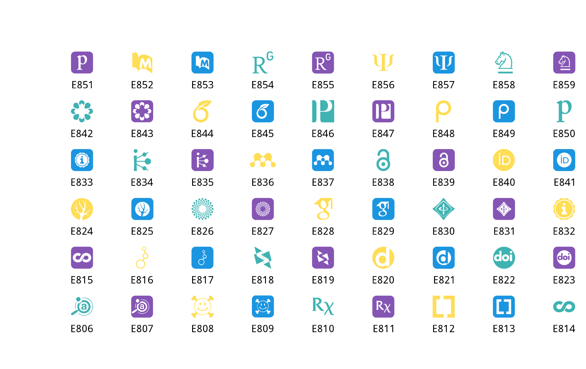
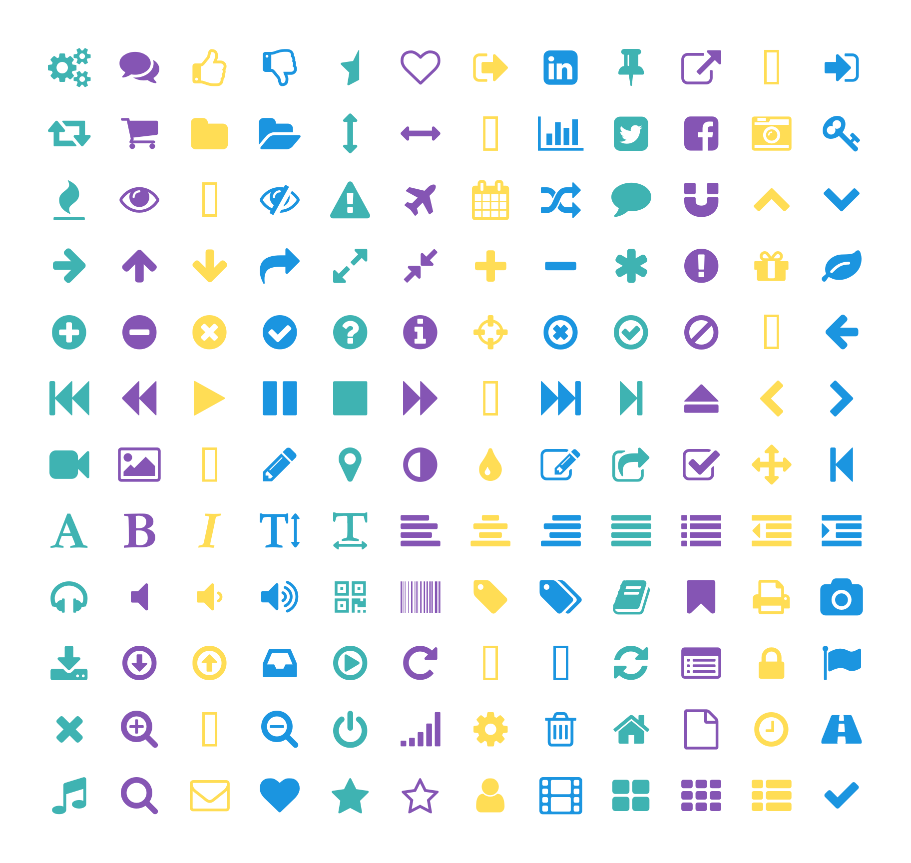
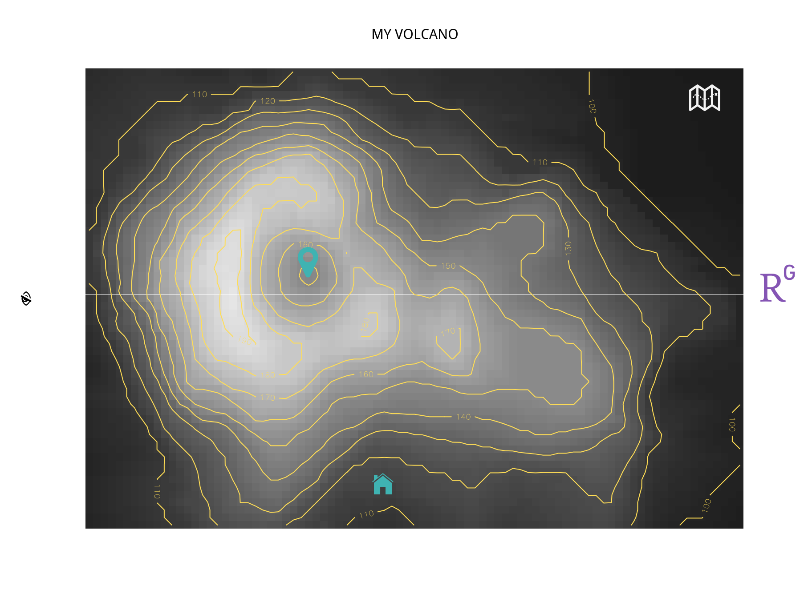

Add icons on your R plot
May 23, 2017
Kevin Cazelles David Beauchesne
10min
Nov 11, 2017 -- Fix paths to icon files
Feb 4, 2018 -- Work with version 5 of Font Awesome
Introduction
Icons are very popular on websites to improve the visual grepping (i.e. visual optimization of eyeball search). We all know how to go at the top or the bottom of a website clicking on chevrons ( ). We are also familiar with simple symbols that allow us to click and edit the text we are typing ( ). Moreover, some web applications are so widespread than their logo appears in thousands of websites (i.e Twitter or Github ). Here, we explain how to use these icons in your R plots. Why use icons on an R plot? It simply increases the possibilities for the number of markers you could use and thus efficiently and usefully refine your plots.
There are two strategies to include icons on a R plot:
- using icons as a font when possible;
- using icons as images.
Here, we exemplify the first strategy and leave the second one for another post (hopefully). We will use icons from three different iconic frameworks:
All of these frameworks propose either a .ttf (TrueType Font) or a .otf file (OpenType Font) or both. These files make our life very easy and we can make a direct link with a previous blog post.
Setting up R
R version used to build the last update of this post
# path <- "../../static/assets/AcademiconsInR"
sessionInfo()[[1L]]$version.string
#R> [1] "R version 3.4.4 (2017-01-27)"List of packages to be used
- the
showtextpackage and its dependencysysfont(see details on line );
- the
magrittrpackage for the pipes (see the associated websites).
Here is line of code you need to install these packages:
install.packages(c('magrittr', 'showtext'))Then, we load them:
library(magrittr)
library(showtext)
packageVersion("showtext")
#R> [1] '0.5.1'Material to be downloaded
We first need to download the 3 fonts we will be using. Links to retrieve them are available below and the next code chunk describes how use the R to get these fonts.
If you have decided to downloaded theses fonts, you can then either install them on your computer (there is most likely an application on your computer to do so and you will be able to use them in other softwares e.g. LibreOffice) or store them in a dedicated folder whose path will be denoted dr hereafter.
dr <- "downloaded_files/"
dir.create(dr, showWarnings = FALSE)
##-- gather URLs
urls <- c(
'https://github.com/jpswalsh/academicons/raw/master/fonts/academicons.ttf',
'https://github.com/FortAwesome/Font-Awesome/blob/master/web-fonts-with-css/webfonts/fa-regular-400.ttf',
'https://github.com/driftyco/ionicons/raw/master/fonts/ionicons.ttf'
)
##-- download the fonts
for (i in 1:3){
download.file(urls[i], destfile=paste0(dr, basename(urls[i])))
}Loading the fonts
To activate the facilities showtext provides, use showtext_auto() (by the way, the author of the package deserves a medal!):
showtext_auto()We add the path to our fonts:
font_paths(dr)
#R> [1] "/home/travis/build/inSileco/inSileco.github.io/content/post/downloaded_files"
#R> [2] "/usr/local/share/fonts"
#R> [3] "/usr/share/fonts"
#R> [4] "/usr/share/fonts/truetype"
#R> [5] "/usr/share/fonts/truetype/dejavu"
#R> [6] "/usr/share/fonts/truetype/liberation"
#R> [7] "/usr/share/fonts/type1"
#R> [8] "/usr/share/fonts/type1/gsfonts"
#R> [9] "/usr/share/fonts/X11"
#R> [10] "/usr/share/fonts/X11/encodings"
#R> [11] "/usr/share/fonts/X11/encodings/large"
#R> [12] "/usr/share/fonts/X11/misc"
#R> [13] "/usr/share/fonts/X11/misc/dosemu"
#R> [14] "/usr/share/fonts/X11/Type1"
#R> [15] "/usr/share/fonts/X11/util"Then, we add academicons.ttf, FontAwesome.otf and ionicons.ttf to our session with the font_add() function:
font_add(family = 'academicons', regular = 'academicons.ttf')
font_add(family = 'FontAwesome', regular = 'FontAwesome.otf')
font_add(family = 'ionicons', regular = 'ionicons.ttf')
##-- check the font families available on your computer.
font_families()
#R> [1] "sans" "serif" "mono" "wqy-microhei"
#R> [5] "academicons" "FontAwesome" "ionicons"Here, things are going to be a little bit trickier than they were in the Hylian blog post, as we should first locate the unicode characters to be used. Fortunately, this is fairly doable:
- FontAwesome provides a very helpful cheatsheet;
.ttffiles are easy to explore, for instance using LibreOffice and inserting a special character (see the figure below).

To use unicode characters in R, there are several possibilities, this blog post explains it well. Below, we use different way to deal with the unicode characters.
Let’s add icons our plot
Academicons
There are 36 unicode characters available. They are numbered like so: “E9” + numbers ranging from 00 to 35 (version 1.8.0). To use them, we create a sequence using sprintf() and paste0() function:
nb <- 54
acs <- sprintf("%02d", 5+1:nb) %>% paste0("E8",.)We now plot them as if they were on a regular grid and we add the decimal value below:
coord <- expand.grid(1:9, 1:6)
cols <- c("#3fb3b2", "#8555b4", "#ffdd55", "#1b95e0")
##
par(mar=c(0,0,0,0))
plot(c(0,9), c(0,7), type="n", ann=FALSE, axes=FALSE)
text(coord[,1], coord[,2], labels= acs, offset = 1.6, cex=2, pos=1)
##
par(family = "academicons")
points(coord[,1], coord[,2], pch=-as.hexmode(acs), cex=5, col=cols)
Adding FontAwesome’s icons
The unicode hexadecimal for the FontAwesome’s icons range from f000 () to f2e0 () in version 4.7. Version
nsq <- 12
fas <- 1:(nsq*nsq) %>% as.hexmode %>% paste0("f0", .)
coord <- expand.grid(1:nsq, 1:nsq)
par(mar=c(2,2,2,2), family = 'FontAwesome')
plot(coord[,1], coord[,2], pch=-as.hexmode(fas), cex=5, col=cols, ann=FALSE, axes=FALSE)
Adding Ionicons
The unicode decimal value of Ionicons’s icons range from 61696 to 62711. There are 765 icons available (version 2.0.1), therefore some hexidecimal are not assigned. Here we’ll use the intToUtf8() function to convert the decimal value into an unicode character.
val <- 61970:62046
ias <- sapply(val, FUN=intToUtf8)
coord <- expand.grid(rev(1:11), 1:7)
##
par(mar=c(2,2,2,2), family = "ionicons")
plot(coord[,1], coord[,2], ann=FALSE, axes=FALSE, pch=ias, cex=5, col=cols)
Combining them
To combine, we have to switch from one font to another. Here is a simple example that combines the three icon frameworks.
data(volcano)
par(las=1, mar=c(4,5,4,4))
image(volcano, col=colorRampPalette(c("grey10", "grey90"))(100), axes=FALSE)
contour(volcano, add=T, col="#ffdd55")
title(main = toupper("My volcano"), cex.main=2)
##
par(family="FontAwesome")
title(ylab=intToUtf8(61552), cex.lab=2)
points(0.336, 0.58, pch=-as.hexmode("F041"), col="#3fb3b2", cex=5)
##
par(family = "ionicons")
points(0.946, 0.943, pch=-as.hexmode("F203"), col="grey95", cex=5)
points(0.451, 0.091, pch=-as.hexmode("F448"), col="#3fb3b2", cex=4)
##
par(family = "academicons")
mtext(text=intToUtf8(59476), side=4, adj=1, line=3, col = "#8555b4", cex=6)
Additional remarks
Note that the steps described here are useful to include any kind of police you have on your computer or you may find online. Therefore this post should help you deal with font if you intend to publish a figure in a journal that requests a specific font. By the way,
showtextallows you to search directly on Google Fonts (see thefont_add_google()function).As you may have realized reading this post there are different ways to write a character in unicode. Fortunately, many online converters help you get from one standard to another (e.g. unicodeconverter does the job).
You may also want to use emoji to cheer your plot up! See the emojifont package available on CRAN and Github. It now support fontawsome as explained here.
fontstruct is a great web application that helps you creating your own font (you can save your font as a
.tffon your computer and now you know how to deal with it!)